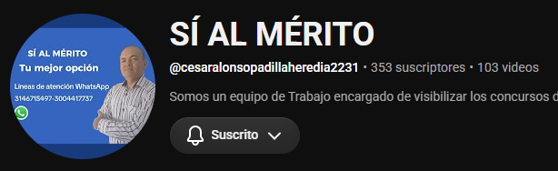

Manual de inscripción en SIMO
Ruta práctica para registrarse, completar la hoja de vida, cargar documentos, consultar empleos y formalizar la inscripción en una convocatoria.
Leyes, decretos, normas y documentos esenciales para estudiar concursos de carrera administrativa en Colombia, con acceso directo a la norma y a explicaciones en video.
← Volver a la página principalRuta práctica para registrarse, completar la hoja de vida, cargar documentos, consultar empleos y formalizar la inscripción en una convocatoria.
Consulte la orientación de la CNSC para registrarse, revisar la oferta, escoger el empleo y realizar la inscripción.
Marco superior de la función pública y del principio de mérito, incluido el artículo 125 sobre empleos de carrera.

Normas que regulan el empleo público, la carrera administrativa y la gerencia pública.
Modifica aspectos de la Ley 909 de 2004 y regula, entre otros asuntos, procesos de selección abiertos y de ascenso.
Decreto Único Reglamentario del Sector de Función Pública, con disposiciones sobre empleo público y carrera.
Regula el derecho de acceso a la información pública y es clave para el control ciudadano, las solicitudes de información y la transparencia institucional.
Regula el derecho fundamental de petición y es clave para solicitudes, quejas, reclamos y reclamaciones ante entidades públicas.
Código de Procedimiento Administrativo y de lo Contencioso Administrativo.
Código General Disciplinario aplicable a las materias disciplinarias del servicio público, con sus modificaciones vigentes.
Consulta oficial de convocatorias y procesos de selección publicados por la Comisión Nacional del Servicio Civil.
Consulta oficial del Manual Específico de Requisitos y Funciones, resoluciones 0065, 0066 y 0067 de 2024 y diccionario de competencias.
Comprenda los fundamentos constitucionales del Estado colombiano y su relación con el mérito, el empleo público y la carrera administrativa.
Objetivo: reconocer los principios y normas constitucionales que orientan la función pública.
Para recordar: Colombia es un Estado social de derecho; la soberanía reside en el pueblo; las autoridades están instituidas para proteger a todas las personas; la función administrativa sirve al interés general y se desarrolla con igualdad, moralidad, eficacia, economía, celeridad, imparcialidad y publicidad; el artículo 125 establece el mérito como regla general para los empleos de carrera.
Preguntas de práctica:
1. ¿Qué principio orienta, como regla general, el ingreso y ascenso en los empleos de carrera? El mérito.
2. ¿A quién pertenece la soberanía? Exclusivamente al pueblo.
3. ¿Cuál es la finalidad esencial del Estado relacionada con la convivencia? Servir a la comunidad, promover la prosperidad general y garantizar la efectividad de los principios, derechos y deberes.
4. ¿Qué debe prevalecer en la función administrativa? El interés general.
5. ¿Qué artículo constitucional consagra la regla general del mérito en los empleos de carrera? El artículo 125.
Reconozca la organización del Estado, las ramas del poder público, los órganos de control, la organización electoral, los órganos autónomos, los sectores administrativos y los mecanismos de coordinación Nación–territorio.
Comprenda cómo se organiza el Estado colombiano, las entidades y organismos que lo integran y la distribución de responsabilidades públicas.
Preguntas de práctica:
1. ¿Para qué se organiza el Estado? Para cumplir los fines esenciales previstos en la Constitución y servir a la comunidad.
2. ¿Qué debe identificar al estudiar una entidad pública? Su naturaleza, funciones, competencias y ámbito de actuación.
3. ¿Por qué es importante diferenciar órganos y entidades? Porque cumplen funciones y tienen estructuras jurídicas y administrativas distintas.
Estudie la separación funcional entre las ramas Legislativa, Ejecutiva y Judicial, así como sus principales responsabilidades constitucionales.
Preguntas de práctica:
1. ¿Qué rama expide las leyes? La Legislativa.
2. ¿Cuál es la función central de la Rama Ejecutiva? Ejecutar la ley y dirigir la administración pública.
3. ¿Qué finalidad cumple la separación de ramas? Distribuir el poder, evitar su concentración y facilitar controles recíprocos.
Identifique el papel del Ministerio Público, la Contraloría General de la República, el Consejo Nacional Electoral y la Registraduría Nacional del Estado Civil.
Preguntas de práctica:
1. ¿Qué vigila la Contraloría? La gestión fiscal y el uso de los recursos públicos.
2. ¿Qué protege el Ministerio Público? El orden jurídico, el patrimonio público y los derechos humanos, dentro de sus competencias.
3. ¿Qué función cumple la Registraduría? Organizar y dirigir aspectos centrales del registro civil y la identificación, además de apoyar la organización electoral.
Estudie la autonomía territorial, la descentralización, la desconcentración, la delegación y los principios de coordinación, concurrencia y subsidiariedad.
Preguntas de práctica:
1. ¿Qué permite la descentralización? Distribuir competencias y responsabilidades entre distintos niveles y entidades.
2. ¿Qué significa coordinación? Actuar articuladamente para alcanzar los fines estatales.
3. ¿Qué exige la subsidiariedad? Que el nivel superior apoye o intervenga cuando el nivel competente no pueda cumplir adecuadamente una tarea.
Comprenda las competencias que se evalúan en el empleo público y relaciónelas con situaciones reales de trabajo.
Marco general de las competencias laborales y comportamentales para los empleos públicos.
Ficha: úselo para estudiar el marco general; en empleos DIAN debe contrastarse con las resoluciones y el diccionario especial DIAN.
Preguntas de práctica:
1. ¿Qué desarrolla el Decreto 815? Competencias laborales y comportamentales del empleo público general.
2. ¿Debe reemplazar el diccionario comportamental DIAN? No. La DIAN tiene regulación especial.
3. ¿Qué debe revisar siempre el aspirante? La norma vigente, la convocatoria y el manual aplicable.
Identifique comportamientos esperados de quienes prestan sus servicios en las entidades públicas.
Preguntas de práctica:
1. ¿Qué relación existe entre competencia y conducta? La conducta observable evidencia cómo se aplica una competencia en el trabajo.
2. ¿Por qué deben analizarse situaciones concretas? Porque permiten valorar la respuesta más coherente con el servicio público.
3. ¿Qué debe evitar una respuesta comportamental? Contradecir los principios del servicio, la norma o el interés general.
Relacione la exigencia comportamental con los niveles asistencial, técnico, profesional y asesor.
Preguntas de práctica:
1. ¿La exigencia comportamental es igual en todos los niveles? No, aumenta según la responsabilidad y complejidad del empleo.
2. ¿Qué debe hacer el aspirante al resolver un caso? Identificar el nivel del empleo y escoger la conducta compatible con sus responsabilidades.
3. ¿Qué error debe evitarse? Escoger una conducta de menor o mayor exigencia que la requerida por el cargo.
Practique la lectura de casos y la selección de respuestas coherentes con la competencia evaluada.
Preguntas de práctica:
1. ¿Qué se analiza primero en un caso? La situación, el conflicto, la competencia y el rol del servidor.
2. ¿Qué caracteriza la mejor respuesta? Es proporcional, ética, legal, orientada al servicio y técnicamente sustentada.
3. ¿Qué debe hacer ante dos opciones parecidas? Comparar sus consecuencias y elegir la que proteja mejor el interés general.
Fortalezca sus conocimientos sobre acceso a la información, derecho de petición y atención a la ciudadanía.
La Ley 1712 de 2014 desarrolla el derecho fundamental de acceso a la información pública y exige una gestión transparente.
Conceptos clave: transparencia activa (publicación proactiva), transparencia pasiva (respuesta a solicitudes), información pública, clasificada y reservada.
Ficha de estudio: identifique el sujeto obligado, la información que debe publicar, las excepciones con fundamento legal y los mecanismos de acceso.
Preguntas de práctica:
1. ¿Qué garantiza la Ley 1712? El acceso a la información pública.
2. ¿Qué es transparencia activa? La publicación proactiva de información que debe divulgarse.
3. ¿Puede reservarse cualquier documento? No. La reserva requiere fundamento legal y aplicación limitada.
4. ¿Qué debe hacer una entidad ante una solicitud? Tramitarla, responder de fondo y orientar cuando corresponda.
La Ley 1755 de 2015 regula el derecho de petición ante autoridades y, en los casos previstos, ante particulares.
Ficha de estudio: diferencie petición de interés general o particular, solicitud de información, consulta, queja, reclamo y denuncia; revise competencia, términos, respuesta de fondo, notificación y remisión cuando la entidad no sea competente.
Preguntas de práctica:
1. ¿Qué exige una respuesta adecuada? Ser oportuna, clara, congruente y de fondo.
2. ¿Qué ocurre si la autoridad no es competente? Debe remitir u orientar conforme a la ley e informar al peticionario.
3. ¿Una petición puede rechazarse por la forma de redacción? No por razones meramente formales; debe garantizarse su trámite.
4. ¿Qué debe revisar el aspirante? La modalidad de petición, el término aplicable y la constancia de respuesta.
Las PQRSDF organizan peticiones, quejas, reclamos, sugerencias, denuncias y felicitaciones. La atención debe ser respetuosa, accesible, oportuna y orientada a resolver.
Ficha de estudio: registre la solicitud, identifique el asunto, verifique competencia, informe el trámite, use lenguaje claro y conserve trazabilidad. No confunda una queja sobre el servicio con una solicitud de información ni con un recurso administrativo.
Preguntas de práctica:
1. ¿Qué debe hacerse primero? Identificar la solicitud y la competencia.
2. ¿Qué significa lenguaje claro? Comunicar de forma comprensible, precisa y respetuosa.
3. ¿Por qué es importante la trazabilidad? Permite verificar recepción, gestión, respuesta y seguimiento.
4. ¿Qué exige la atención diferencial? Eliminar barreras y adaptar la orientación sin discriminación.
Estudie las reglas básicas de la actuación administrativa y la responsabilidad disciplinaria de los servidores públicos.
El CPACA regula la actuación administrativa y el control de la actividad estatal en los asuntos previstos por la ley.
Ficha de estudio: relacione principios, competencia, impedimentos y recusaciones, acto administrativo, notificación, recursos, debido proceso, eficacia, publicidad y control judicial. En cada caso pregunte quién decide, con qué procedimiento, dentro de qué término y cómo se comunica.
Preguntas de práctica:
1. ¿Qué protege el debido proceso? Las garantías de quienes intervienen en una actuación.
2. ¿Qué debe contener una decisión motivada? Razones de hecho y de derecho que sustentan la determinación.
3. ¿Para qué sirven los recursos? Para controvertir o solicitar la revisión de decisiones conforme a la ley.
4. ¿Qué debe verificarse ante una notificación? La modalidad, la fecha y los efectos jurídicos aplicables.
El Código General Disciplinario establece deberes, prohibiciones, faltas, sanciones y garantías del proceso disciplinario, con sus reformas vigentes.
Ficha de estudio: diferencie deber funcional, falta disciplinaria, dolo o culpa, ilicitud sustancial, sujetos procesales, competencia, investigación, juzgamiento, defensa, contradicción y decisión. No confunda una inconformidad administrativa con una falta disciplinaria sin analizar el deber funcional comprometido.
Preguntas de práctica:
1. ¿Qué debe analizarse primero? El deber funcional y la conducta concreta atribuida.
2. ¿Qué garantiza el debido proceso disciplinario? Defensa, contradicción, imparcialidad, competencia y decisión motivada.
3. ¿Qué diferencia hay entre error y falta? Debe valorarse la conducta, el deber, la ilicitud y el elemento subjetivo conforme a la ley.
4. ¿Qué debe evitar un servidor? Actuar con conflicto de interés, ocultar información o incumplir injustificadamente sus deberes.
Estudie el procedimiento disciplinario con la versión vigente del Código General Disciplinario y sus reformas, sin separar las garantías constitucionales.
Ruta de análisis: competencia, noticia disciplinaria, etapa procesal, pruebas, sujetos procesales, defensa, decisión motivada, recursos y términos. Verifique siempre la norma vigente y la autoridad competente para el caso concreto.
Preguntas de práctica:
1. ¿Qué debe cuidar la autoridad? Competencia, imparcialidad, términos, prueba y motivación.
2. ¿Qué puede hacer la persona investigada? Ejercer defensa, conocer la actuación y controvertir las pruebas.
3. ¿Por qué importa la etapa procesal? Porque determina las actuaciones, oportunidades y garantías aplicables.
Consulte el marco propio de la DIAN y distinga funciones, requisitos y competencias según el nivel del empleo.
La Resolución 0067 de 2024 adopta el MERF, que orienta las funciones y competencias funcionales de los empleos DIAN.
Preguntas de práctica:
1. ¿Qué consulta el MERF? Requisitos, funciones y competencias funcionales del empleo DIAN.
2. ¿Qué resolución adopta el MERF? La Resolución DIAN 0067 de 2024.
3. ¿Por qué debe revisarse el empleo específico? Porque las funciones y requisitos dependen de la ficha del cargo.
La Resolución 0066 de 2024 permite estudiar los requisitos mínimos y las equivalencias aplicables.
Preguntas de práctica:
1. ¿Qué regula la Resolución 0066? Requisitos mínimos y equivalencias aplicables en la DIAN.
2. ¿Una equivalencia se presume? No; debe estar autorizada y cumplir las condiciones normativas.
3. ¿Qué debe comparar el aspirante? Su formación y experiencia con los requisitos del empleo y sus equivalencias.
Adopta el Diccionario de Competencias Comportamentales de la DIAN, con definiciones, niveles de desarrollo y conductas observables. No se reemplaza por el Decreto 815.
Preguntas de práctica:
1. ¿Qué adopta la Resolución 0065? El Diccionario de Competencias Comportamentales DIAN.
2. ¿Qué permiten las conductas observables? Identificar cómo se evidencia una competencia en el desempeño.
3. ¿Qué marco debe usarse para competencias comportamentales específicas DIAN? La Resolución 0065 y su diccionario.
Estudie exclusivamente el Código de Integridad DIAN: honestidad, respeto, compromiso, diligencia y justicia, junto con su filosofía institucional y conductas esperadas. Este capítulo no desarrolla el Decreto 815.
Preguntas de práctica:
1. ¿Cuáles son los cinco valores del Código? Honestidad, respeto, compromiso, diligencia y justicia.
2. ¿Qué debe orientar la conducta del servidor DIAN? Los valores y compromisos éticos del Código de Integridad.
3. ¿Debe confundirse este capítulo con el Decreto 815? No; son contenidos diferenciados y el Código corresponde al marco DIAN.